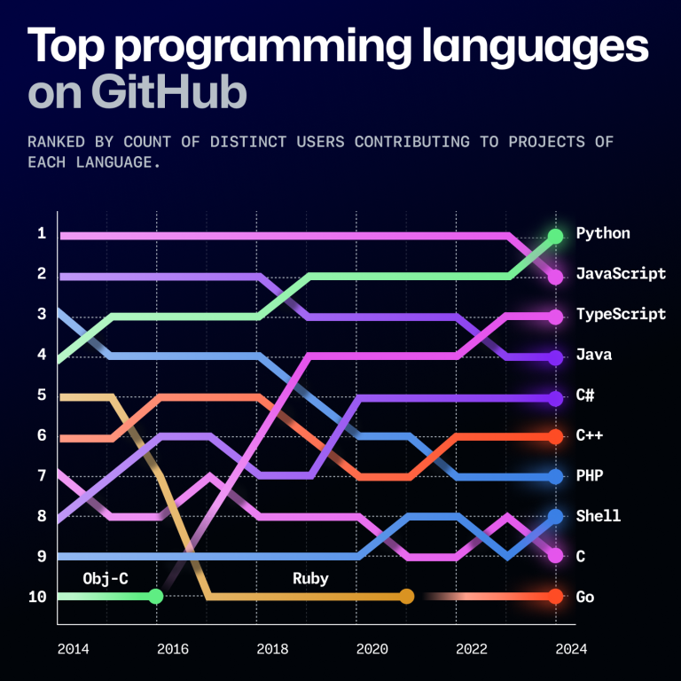
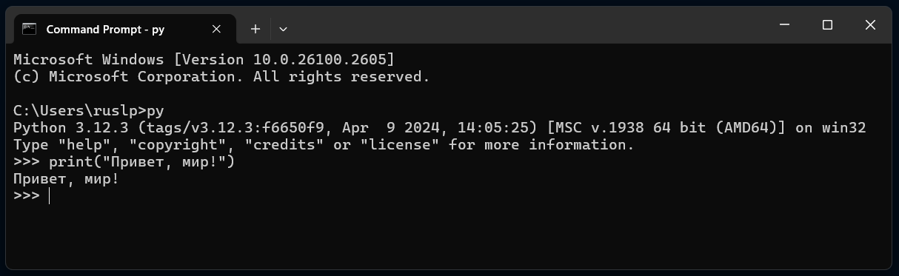

Front end — это часть приложения, которую видит пользователь. В веб-приложении это всё, что происходит в браузере: внешний вид сайта, кнопки, формы, анимации. Основные технологии для front end — это HTML (структура страницы), CSS (стили и оформление) и JavaScript (интерактивность).
Back end — это "внутренняя" часть приложения, которая работает на сервере. Она отвечает за обработку данных, хранение информации в базах данных и выполнение сложных вычислений. Back end может быть написан на разных языках, включая Python, Java, PHP и другие.
Пример:
Когда вы заходите на сайт, front end — это то, что вы видите: кнопки, текст, картинки. А back end — это то, что
происходит "за кулисами": например, когда вы вводите логин и пароль, back end проверяет их правильность в
базе данных.
Front End также называют клиентскими приложениями, Back End называют серверными приложениями.
Языки программирования — это инструменты, которые помогают создавать программы.
Вот несколько популярных языков:
Отчет GitHub Octoverse показывает, какие языки программирования самые популярные среди разработчиков.
После изучения этого курса ты сможешь понимать эти языки. Это поможет тебе создать свои сайты, игры или приложения! Ты сможешь разрабатывать что-то уникальное, как делают профессиональные программисты.
А. В среде VS Code
.py (например, hello.py)print("Привет, мир!")
Ctrl + S).Ctrl + F5.
Б. В интерпретаторе командной строки
Интерпретатор Python позволяет выполнять код прямо в командной строке. Вот как это сделать:
py чтобы запустить интерпретатор (в более старых версиях - команда
python или python3).print("Привет из интерпретатора REPL")
Enter чтобы выполнить командуИнтерпретатор также иногда называют REPL, что значит Read-Eval-Print Loop. Это означает, что вы можете вводить команды, выполнять их, а затем видеть результат прямо в командной строке.
Функция print — это одна из самых простых и полезных функций в Python. Она выводит текст или данные на
экран.
Примечание: В Python называния функций и переменных "чувствительны к регистру букв". Это
значит, что названия и ключевые слова нужно писать так как указано - не менять большие буквы на маленькие или
наоборот. Например, функция print пишется с маленькой буквы.
Пример:
print("Привет, мир!")
Этот код выведет на экран текст "Привет, мир!".
Аргументы функции — это данные, которые мы передаем в функцию. В примере выше аргумент — это
строка "Привет, мир!".
Технологии front end:
Технологии back end:
Термины языков программирования:
print — это функция, которая выводит данные на экран.Мы будем использовать следующие программы и сайты:
и другие.
Напишите программу, которая выполняет математические операции над числами и выводит результат.
Пример:
x = 25
y = 8
# Сложение
print("Сумма:", x + y)
# Вычитание
print("Разность:", x - y)
# Умножение
print("Произведение:", x * y)
# Деление
print("Частное:", x / y)
Задание:
**) и нахождения остатка от деления (%).